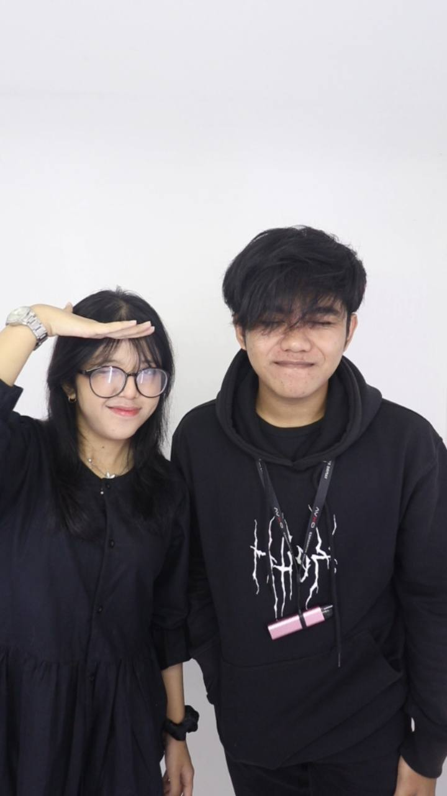
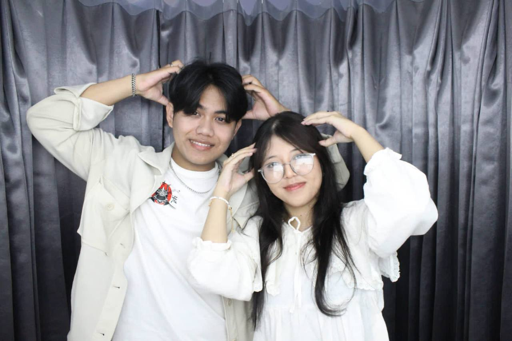
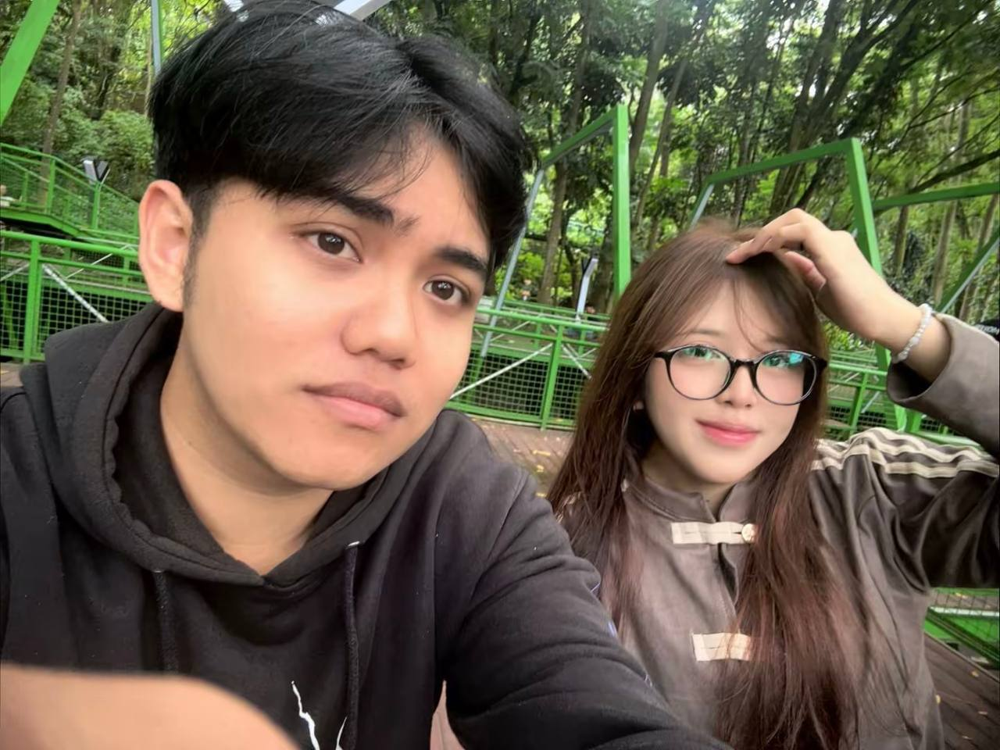

Untuk
Shifa Eldita Azzalea
Sejak 17 Agustus 2024
"Dan setiap detiknya, aku makin sayang kamu."

1 Maret 2024Aku diculik ke kedai roti Ibu, terus lanjut ke Braga, jajan bareng, dan photobox. Di situ kita lucu bangetttt — momen receh yang gak akan pernah aku lupain.

19 Maret 2025Photobox-nya lucuuu, akunya ganteng bgt sampai dipajang di dompet Tuan Putri. Hal kecil ini yang bikin aku senyum-senyum sendiri tiap inget.

20 Juli 2026Masih inget banget, di tempat baksil aku nyuapin Tuan Putri coklat Dairy Milk sampai tersipu malu dan baper. Aku kasih baju banyaaak dan bunga yang bagus — Tuan Putri sukaaa.
Klik untuk membuka
Untuk Tuan Putri, cintaku...
Aku bukan orang yang jago ngomong. Tapi kalau soal kamu, entah kenapa kata-kata selalu dateng sendiri.
Ada hari-hari yang aku inget jelas di kepala — bukan karena besarnya momen itu, tapi karena kecilnya. Kaya waktu aku "nyulik" kamu ke kedai roti Ibu, terus kita ke Braga, jajan, photobox. Hari itu gak ada yang spesial, tapi justru itu yang bikin spesial. Karena bersamamu, hal biasa jadi luar biasa.
Aku inget photobox kita di 19 Maret 2025. Kamu bilang aku ganteng, terus kamu pajang di dompet kamu. Tuan Putri, hal kecil itu artinya lebih dari yang kamu tau. Itu artinya kamu bangga sama aku. Dan itu bikin aku pengen jadi orang yang lebih baik lagi buat kamu.
Dan 20 Juli 2026 — hari ulang tahun kamu. Waktu itu aku masih inget banget, kita di tempat baksil, aku nyuapin kamu coklat Dairy Milk sampai kamu tersipu malu dan baper. Aku kasih kamu baju banyak, bunga yang cantik, dan kamu suka banget. Bukan karena aku pengen kamu kagum, tapi karena aku pengen kamu bahagia. Bahagia itu, Tuan Putri, satu-satunya yang aku pengen kasih ke kamu seumur hidup aku.
Tapi sayang...
Aku juga mau jujur sama kamu. Aku sayang banget kok ke kamu. Cuma maaf ya, selama ini aku belum bisa ngerti kemauan kamu tanpa kamu bilang. Aku sadar aku kurang peka. Sampai kamu sampe kepikiran buat udahan, entah bulan ini atau habis ulang tahun aku.
Aku minta maaf ya. Aku beneran sayang sama kamu. Aku lagi berusaha buat jadi orang yang berbeda — orang yang bisa bikin kamu nyaman, bikin kamu aman, bikin kamu ngerasa butuh aku, dan bisa jadi benteng buat kamu. Aku gak mau kehilangan kamu, Tuan Putri. Aku mau belajar, pelan-pelan, asal kamu masih mau ngasih aku kesempatan.
Kamu adalah tempat aku pulang. Tempat aku cerita. Tempat aku jadi diri sendiri tanpa takut dihakimi. Dan aku bersyukur banget, Tuhan kasih kamu ke aku.
Makasih ya udah ada. Makasih udah milih aku. Makasih udah sabar.
Aku sayang kamu. Lebih dari yang bisa aku tulis di sini.
Selamanya milik kamu,
Muhammad Faiz Akbar Kamil